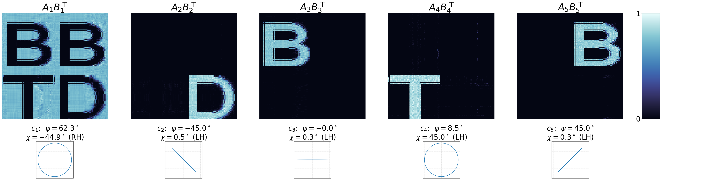

pyBBTD#
Split images that have several numbers per pixel into a few parts you can interpret.
Many instruments record more than one number at each pixel: several spectral channels, the polarization of light, or a whole covariance matrix. pyBBTD explains such an image as a sum of a few terms. Each term is a spatial map, showing where it is present, times a signature, describing what it puts in each pixel.

A polarization image of the letters B B T D, split by pyBBTD into five terms: each letter and the background, with its polarization drawn below it. See the Quickstart.#
Where to start#
What a tensor is and what decomposing one means, with a real image and no prior knowledge.
Install pyBBTD and decompose an image in a few lines.
Which of the four models matches your data.
Step-by-step examples for every model, with real outputs.
Install#
pip install git+https://github.com/scbarreto/pyBBTD
The models#
Model |
Data at each pixel |
Tensor shape |
|---|---|---|
several numbers (channels) |
(I, J, K) |
|
a covariance matrix, stored as a vector |
(I, J, K²) |
|
a Stokes vector (polarization) |
(I, J, 4) |
|
a matrix, or a covariance matrix |
(I, J, K, M) |